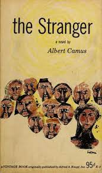
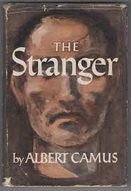
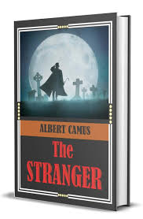

<!---RMIT University Vietnam
  Course: COSC2430 Web Programming
  Semester: 2023
  Assessment: Assignment 1 - Static Website
  Author: Pham Minh Quang
  ID: S3978814
  Acknowledgement: Book Detail Page--->
<!DOCTYPE html>
<html>
<head>
    <title>Book Details Page</title>
    <meta name="viewport" content="width=device-width, initial-scale=1">
</head>
</html>
<meta name="viewport" content="width=device-width, initial-scale=1">
  <link rel="stylesheet" type="text/css" href="booksdetail.css">
  <link rel="stylesheet" href="https://cdn.jsdelivr.net/npm/@fortawesome/fontawesome-free@6.2.1/css/fontawesome.min.css">

</head>
<body>
    <section class="header">
        <nav>
            <a href="index.html">
            </a>
            <div class="nav-links" id="navLinks">
                <i class="fa-solid fa-x" onclick="hideMenu()"></i>
                <ul>
                    <li><a href="index.html">HOME</a></li>
                    <li><a href="best.html">BESTSELLERS</a></li>
                    <li><a href="philoshophy.html">PHILOSOPHY</a></li>
                    <li><a href="neuroscience.html">NEUROSCIENCE</a></li>
                    <li><a href="contact.html">CONTACT</a></li>
                </ul>
                
            </div>
            <i class="fa-solid fa-x" onclick="showMenu()"></i>
        </nav>
        </section>
        <!---JavaScript--->
<script>
            var navLinks = document.getElementById("navLinks");
            function showMenu(){
                navLinks.style.right = "0";
            }
            function hideMenu(){
                navLinks.style.right = "-200px";
            }
</script>
<section class="det">
    <h2><a href="index.html">Home</a> > <a href="philoshophy.html">Philoshophy</a> > The Stranger</h2>
    <div class="desc">
        <div class="imga">
            
        </div>
        <div class="timg">
            
            
            
            
        </div>
        
       
        
    </div>
    <div class="money">
        <h1>$20</h1>
    </div>
    <button class="button">Purchase</button>
    <h1>The Stranger</h1>
    <p>Camus utilized The Stranger as a platform to explore absurdity, a concept central to his writings and at the core of his treatment of questions about the meaning of life. However, Camus did not identify himself as a philosopher. In fact, he abjured “armchair” philosophy and argued that sitting around and thinking was not enough. One needed to live life as well. He also did not identify himself as an existentialist. He agreed with some proponents of existentialist thought that life has no inherent meaning, but he criticized others for their pursuit of personal meaning. Camus’s concept of the absurd instead implored people to accept life’s lack of meaning and rebel by rejoicing in what life does offer. Elements of this philosophy can be seen in Meursault, as he refuses to behave as if there is meaning where there is none—or, as Camus himself put it in a preface to The Stranger, Meursault “does not play the game.” Society thus feels threatened and cuts off Meursault’s head. Similar themes can be seen in Camus’s essay Le Mythe de Sisyphe (The Myth of Sisyphus), also published in 1942.

   

    </p>

    <p>
Camus wrote The Stranger from a place of tragedy and suffering. His father had died in World War I, and the unfolding carnage of World War II forced a questioning of life and its meaning. Camus had also witnessed mistreatment of native Algerians during the French occupation of Algeria, which had begun in the first half of the 19th century and, after World War I, was opposed by a growing nationalist movement. This conflict can be seen specifically in Meursault’s killing of “the Arab,” the only name he uses to refer to Raymond’s mistress’s brother. The murder has been read by some as a metaphor for the treatment of Algerian Muslims by the colonizing French. Camus published The Stranger at a time when Algerians were demanding political autonomy with increased forcefulness; although France did extend some rights during the 1940s, ongoing conflicts and failed French promises of more independence culminated in the outbreak of the Algerian War in 1954.
    </p><br>
</section>

</body>
<footer>
    <nav>
        
        <div class="footer-nav-links">
    
            <a href="about.html">ABOUT US</a>
            <a href="privacy.html">PRIVACY POLICY</a>
            <a href="terms.html">TERMS OF USE</a>
            <a href="contact.html">CONTACT US</a>
            
        </div>
    </nav>

</footer>
</html>